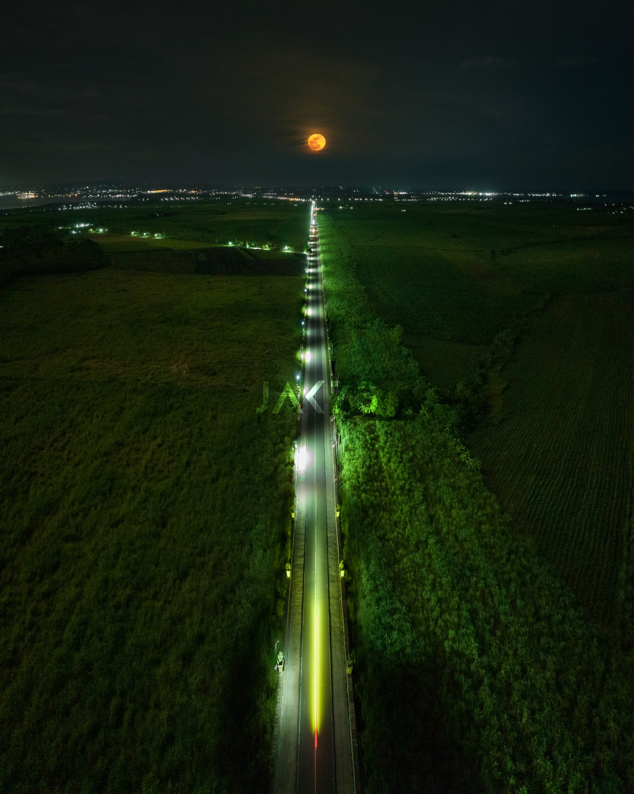

AISLE OF MEDELLIN
Published by: Kimbery Conde

Published by: Kimbery Conde
LOOK: The famous "Aisle of Medellin" in the town of Medellin in northern Cebu Looks like a location straight out of a Korean film as "Bugang" in Bisaya is seen all over the vast sugarcane plantation in the area. It has since become a go-to place for riders all over the province.| Photos from Jack Ponpon via Immae Lachic
On this very day last year, this photo of the Aisle was taken.
The Aisle in Bloom. üòçüåæüåæüåæ
On the months of September and October, tassels of tiny white
flowers develop at the upper end of the sugarcane stalks which
herald their harvest season. Seen from above, these flowers appear
to be like cotton balls scattered across the vast sugarcane fields
in Medellin, Cebu. üåæ Tag someone you want to walk here with!
Aisle of Medellin during night time

Recent Reviews
Gretchen Sunit
Great location, really pleasant and clean rooms, but the thing that makes this such a good place to stay are the staff. All of the people are incredibly helpful and generous with their time and advice. We travelled with two six year olds and lots of luggage and despite the stairs up to the elevator this was one of the nicest places we stayed in the four weeks we were in Europe.
Denn Carlisle Torrevillas
Great location, really pleasant and clean rooms, but the thing that makes this such a good place to stay are the staff. All of the people are incredibly helpful and generous with their time and advice. We travelled with two six year olds and lots of luggage and despite the stairs up to the elevator this was one of the nicest places we stayed in the four weeks we were in Europe.
Kimberly Conde
Great location, really pleasant and clean rooms, but the thing that makes this such a good place to stay are the staff. All of the people are incredibly helpful and generous with their time and advice. We travelled with two six year olds and lots of luggage and despite the stairs up to the elevator this was one of the nicest places we stayed in the four weeks we were in Europe.
New review will appear here..
Submit a Review here